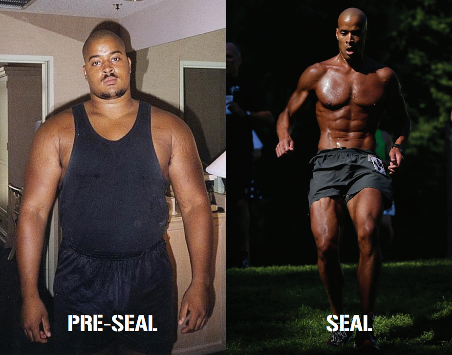

David Goggins
David Goggins (born February 17, 1975) is an American ultramarathon runner, ultra-distance cyclist, triathlete, public speaker, and author. He is a retired United States Navy SEAL member who served in the Iraq War. His first memoir, Can't Hurt Me, was released in 2019 and a sequel Never Finished in 2022.
Early life
David Goggins was born on February 17, 1975, to Trunnis and Jackie Goggins. In 1981, Goggins lived in Williamsville, New York, with his parents and brother, Trunnis Jr.[5] Goggins has described how, as a six year old, he worked alongside his mother and brother at his father's skate rink.[5] Goggins has claimed that he and other members of his family suffered constant and severe abuse from his alcoholic father before escaping from him along with his mother to Brazil, Indiana, something which he talks about in the book Can't Hurt Me.[6] In the gap between his discharge from the Air Force and enlisting in the Navy, Goggins worked as a pest control fumigator.
Military career
Goggins applied to join the United States Air Force Pararescue, and was accepted into training after failing his ASVAB twice. During the training he had been diagnosed with sickle cell trait and was removed from training. He was given the option to restart the training upon his return but chose not to.[7][8] He then completed United States Air Force Tactical Air Control Party (TACP) training, and worked as a TACP from 1994 until 1999, when he left the United States Air Force.[5] After three attempts due to multiple injuries, Goggins succeeded in graduating from BUD/S training with BUD/S class 235 in 2001. Following SEAL Qualification Training (SQT) and completion of six month probationary period, he received the NEC 5326 as a Combatant Swimmer (SEAL), entitled to wear the Special Warfare insignia also known as "SEAL Trident". Goggins was assigned to SEAL Team 5. In his 20-year military career, Goggins served in Iraq and Afghanistan.[9] In 2004, Goggins graduated from Army Ranger School, and received the "Enlisted Honor Man" award.
Charity
After several of his friends died in Afghanistan in a helicopter crash in 2005 during Operation Red Wings,[10] Goggins began long-distance running with the aim of raising money for the Special Operations Warrior Foundation. The Foundation gives college scholarships and grants to the children of fallen special operations soldiers.[11] Competing in endurance challenges, including the Badwater Ultramarathon three times, has enabled Goggins to raise more than US$2 million for the Special Operations Warrior Foundation.
new paragraph
Marathon and ultramarathon running
Goggins attempted to enter the Badwater Ultramarathon as a fundraiser but was told by organizers that he needed to enter another ultramarathon first, as the Badwater is an invitational event. In 2005, Goggins entered the San Diego One Day, a 24-hour ultramarathon held at Hospitality Point in San Diego. He was able to run 101 miles in 19 hours and 6 minutes. He completed the Las Vegas Marathon in a time that qualified him for the Boston Marathon. In 2006, Goggins entered the Hurt-100 in Hawaii. [13] Goggins was invited to the 2006 Badwater-135, where he finished 5th overall.[14] Three months after completing his first Badwater Ultramarathon in 2006, he competed in the Ultraman World Championships Triathlon in Hawaii. He placed second in the three-day, 320-mile race. He also participated in the Furnace Creek-508 (2009),[15] an ultra-distance invitational Cycling Race. In 2007, Goggins achieved his best finish at the Badwater-135 by placing 3rd overall.[16] He competed in the Badwater-135 again in 2008 and did not finish the race.[17] He competed in the Badwater-135 in 2013 and finished 18th,[18] after a break from the event since 2008.[19] He competed in the Badwater-135 again in 2014 and did not finish the race.[20] Over the next two years,[when?] he competed in another 14 ultra-endurance races, with top-five finishes in nine of them. He set a course record at the 48-hour national championships, beating the previous record by 20 miles with a total distance traveled of 203.5 miles.[citation needed] In 2008 he was named a "Hero of Running" by Runner's World.[21] In 2016, Goggins won the Infinitus 88k in 12 hours, almost twenty minutes ahead of the next finisher. In the same year, he also won the Music City Ultra 50k, and Strolling Jim 40 Miler.[22] In 2020, Goggins ran the Moab 240 ultramarathon, placing 2nd in the 241 mile event with a time of 63 hours and 21 minutes, approximately 95 minutes behind race winner Michele Graglia.[23][24] Entrepreneur Jesse Itzler, upon seeing Goggins perform at a 24-hour ultramarathon, called and hired Goggins to live with him in his house for a month. Itzler wrote about his experience on a blog and later published the story as the book Living With A SEAL.[25] His self-help memoir, Can't Hurt Me: Master Your Mind and Defy the Odds, was released on December 4, 2018. In the book he refers to the 40% rule, his belief that most of us only tap into 40% of our capabilities.[26] A follow-up sequel Never Finished: Unshackle Your Mind and Win the War Within published December 4, 2022, explores the principles, understanding of the mind, and methods that allowed Goggins to realize his potential and that the pursuit of excellence is a never-ending journey.